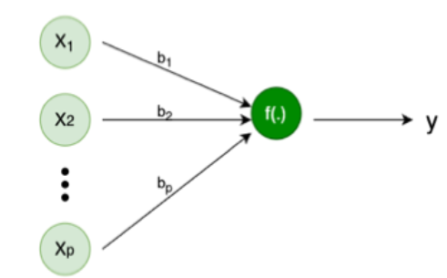
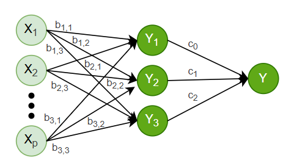

Introduction
Linear regression is one of the most basic and widely used techniques in statistics and machine learning. It helps us understand the relationship between input variables (like temperature, hours studied, etc.) and an output variable (like ice cream sales or exam scores). But did you know that this simple model can also be represented using a neural network?
At first glance, neural networks might seem complex—with layers, activations, and weights—but at their core, they’re built on simple mathematical operations. In fact, if we strip away the complexity and keep just the basics, a neural network can behave exactly like a linear regression model.
In this blog, we’ll explore how linear regression (both single and multiple input versions) can be expressed as a very simple neural network. This not only helps us understand neural networks better, but also shows how classical models and modern deep learning are more connected than we often realize.
A Basic Linear Regression Representated as Neural Network
Take a basic Linear Regression Model with p Independent variable and one Dependent Variable. We can represent it as y_i = b_0 + b_1 \times x_{1,i} + b_2 \times x_{2,i} + ... + b_p \times x_{p,i} + \epsilon_i
for i = 1, 2, ... , n
In matrix notation we can write y = X^T b + \epsilon
where, dimention of y is 1 \times n, dimention of b is 1 \times p and dimention of X is n \times p
Now, Let us consider a simple Neural Network with p input and one hidden layer with one node. Like below image

If we consider weights are b_1, b_2, ... ,b_p, Bias of the Node is b_0 and the activation function for this Node as
f(a_1, a_2, \dots, a_p) = \sum_{i=1}^p a_i
Then the output of the neural network will be
y = b_0 + b_1x_1 + b_2x_2 + ... + b_px_p
Which is same as Multiple Linear Regression.
Neural Network with Multiple Node and One Layer
Let’s consider a Neural Network with 3 Nodes and One Layer (Since this is Regression we need a single output Node to combine all the outputs from the first Layer).

We have p Independent variables and one Dependent variable (Same as above). We have an Activation Function for all Nodes the same as before. Weight for the first Node is defined as b_{1,i} for i=1,2,\dots,p. Similarly for second Node b_{2,i}.
We have already seen output of first Node y_1 can be expressed as a Linear Regression y_1=x^T.b_1. Similarly y_2=x^T.b_2 and y_3=x^T.b_3. Which are 3 different Linear Regressions.
In Matrix form we can write: \begin{bmatrix}y_1 \\ y_2 \\ y_3 \end{bmatrix} = \begin{bmatrix} b_{1,0} & b_{1,1} & b_{1,2} & \dots & b_{1,p}\\ b_{2,0} & b_{2,1} & b_{2,2} & \dots & b_{2,p}\\ b_{3,0} & b_{3,1} & b_{3,2} & \dots & b_{3,p}\\ \vdots & \vdots & \vdots & & \vdots\\ b_{p,0} & b_{p,1} & b_{p,2} & \dots & b_{p,p} \end{bmatrix} \begin{bmatrix} x_{1}\\ x_{2} \\ \vdots \\ x_{p} \end{bmatrix} \\ y^* = Wx^*
Where, W is the weight Matrix of the first Layer.
In the Output Node we will combine all the output of the First Layer. If the weights of Output Node is c_1,c_2 and c_3, then by the same Matrix Notation we can write Final Output
\hat{y} = c_0 + c_1y_1 + c_2y_2 + c_3y_3 = \begin{bmatrix} c_0 & c_1 & c_2 & c_3 \end{bmatrix} \begin{bmatrix} 1 \\ y_1 \\ y_2 \\ y_3 \end{bmatrix}\\ \hat{y} = c^Ty^{**}\\ \hat{y} = c^TWx\\ \hat{y} = W^*x\\ Pushing the similar idea we can represent any Neural Network with Linear Activation Function as combination of Multiple Linear Regressions.